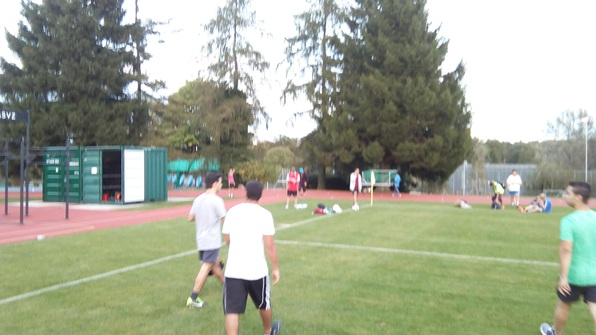
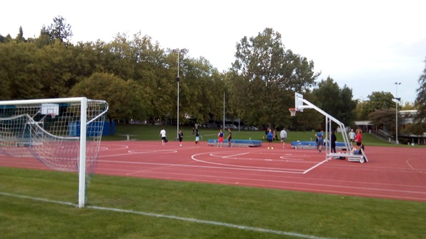
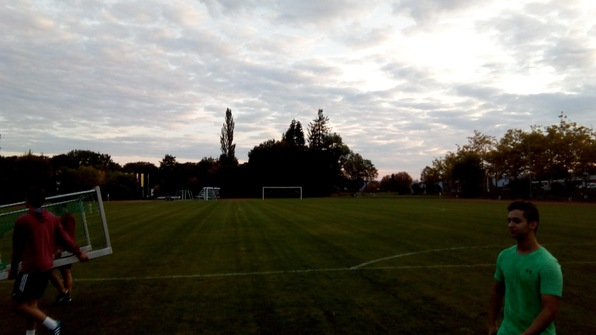

Woke up bright and early… (somehow I want to start every blog post this way! I just start typing those words before my mind clicks into place and I remember what I actually did.
But today, they were actually true! I woke up bright and early, grabbed a trusty, tooth-jamming Clif bar, and walked to the CAB for a Machine Learning lecture. It was pretty great–the prof was very cool, talked about the philosophy of learning and the basic notation underlying the philosophy. Then he showed us about 4 books that he thought would be useful. One of them happened to be the Information Theory book that had caught my eye the other day.
So, once I’d got out of Machine Learning, skipped out after the first half of another class that wasn’t very exciting and taught Bayes Net stuff I’d already learned, taken a lovely walk in the glowing sun (this is the life!) I headed to the CS library and started reading that book!
Opened the page on an interesting application of Bayes’ Thm, then started from the beginning, got off to a good start with a cool derivation of Stirling’s approximation from the Poisson distribution. Then a great explanation of Hamming codes! I was psyched. So I checked out the book from the library and found, to my great surprise, that I could have it for 90 days! Man, I gotta get some other textbooks this way.
Toasted a premade pizza for lunch, which was delicious, then took a 2 hour nap!
When I woke up, I met Jerico from the house, a friendly Hong Kongian, and we went to play soccer! Showed up at the pitch, about 30 minutes away from Culmann up the hill, and soon after, loads of guys began to pour in. After standing around awkwardly for a little while and meeting some dudes–I love trying to speak a bit of German–we split the pitch into two short fields and had 3 teams of 7 rotating at first. Nobody wanted to play goal, and I was feeling sick, so I took it! Did decently on back passes and kicks and stuff, but was unable to stop either of the breakaway shots taken on me. For the next game, I switched to right wing, had some really fun runs! Near the end of the game, I actually punched in a goal after a deep pass–the only goal our team scored! Felt awesome!



After that, played a goofy giant game on another field, then walked back to Culmann with Jerico. There, after making myself some delicious creamy eggs–you should try this, just stir them continuousy while cooking–I got into a crazy fussball run. My team, me with various partners, went undefeated for about 10 games, and I ended by beating my adversaries 2 on 1, dancing between offense and defence frantically.
Then some clubbing insanity started! I had been talked into going to some “Electro-Swing” event by Camilla (or Mia). But it turned out that the event was more “clubbing” than swing-dancing. Everyone was pregaming with beer and wine for a good hour and a half before the event began.
Finally, at about midnight, we left for the event. The line was long, so I went with Anna so she could get some money from a Geldautomat. That was fun, we met some goofballs in a bar we stopped in to ask directions.
The clubbing was not so fun; it was like the salsa dancing event I’d gone to at the UW and been asked, “So, how did you end up here anyway.” Well, I thought I held my own with the goofy club dancing, but I couldn’t really figure out what the whole thing was all about.
Walked back at around 4am singing goofy songs with Anna and dragging a tired Abhi. Decided to sleep in and meet Juyoung et al. a bit later than planned am Samstag.